|
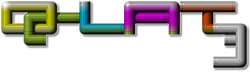
|
|
|
 Janne
Kivilahti (Design, Graphics, Music & SFX) Janne
Kivilahti (Design, Graphics, Music & SFX)
Hugues Jerome (Tools, Engine
Programming)
Antonis Tsagaris (Music)
|
 Q-Lat3 Installer (FINAL v3) Q-Lat3 Installer (FINAL v3)
|
|
|
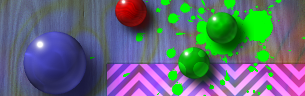
Q-Lat3
is a fast paced and colorful arcade type game with a simple, but
challenging goal: Timer is set to 3 minutes, and your task is to clear
stages filled with colorful balls by painting all the balls to the same
color. Painting is done by pushing the colorful balls against each
other using your player ball. When the balls collide, the slower ball
is painted with the color of the faster moving ball. From clearing
stages you
are rewarded with bonus points and valuable extra time, so you need to
act fast. But speed isn't everything - by carefully planning how you
smash balls together, you can create chain reactions (a.k.a
combos) that earn you lots of extra points. But watch out
for black balls - you don't get any points from them.
And once they
start rollling you're in trouble!
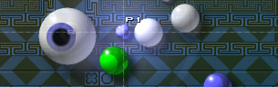
Fast reflexes, good aiming, quick thinking and sometimes just good luck
is required to master Q-Lat3. Eventually it is you who sets the goals.
This game can be as easy or hard as you want it to be ;)
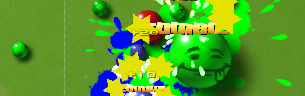
Q-Lat3 is a new take on the Q-Lat series, adding lots of new stuff and
tricks. Now you have walls and pits blocking your way, nasty lazers to
avoid, assembly lines, slippery ice, moving blocks, boouncers, rolling
eyeballs and even dance
floors(!?) making
that hiscore hunting a more harder task.
Q-Lat3 offers fun (and sometimes insanely frustrating) hiscore hunting
alone, or
with a friend in two player mode.
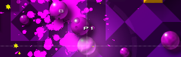
The game is done using Piste Gamez Game Studio.
|
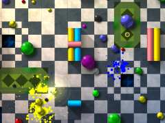
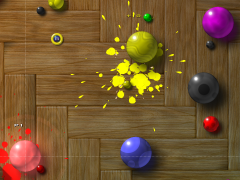
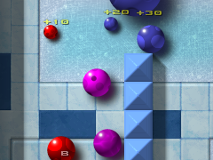
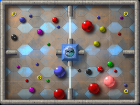

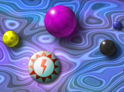
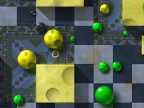
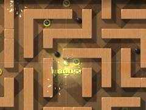
|
|
Original, arcade style gameplay
For 1 or 2 players
15 stages that appear in random order
2 bonus stages
Use mouse, keyboard or XBox360 gamepad
Colorful hand drawn 2D graphics
Plays in 1280x720 HD resolution
Soundtrack by Antonis Tsagaris
& Janne
Lots of arcade style sound effects
|
|
Windows XP or Vista
Monitor supporting 1280x720 resolution
Latest version of DirectX
30 MB of hard disk space
|
|
 Q-Lat3 Forum Thread Q-Lat3 Forum Thread
More
music by Antonis Tsagaris
|
|

|